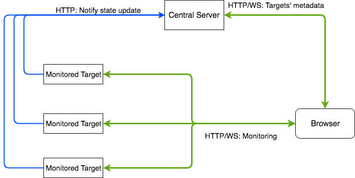

<div class="intro-container">
  <h3>LinuxMonitor</h3>
  <!--<p>LinuxMonitor is a web-based Linux monitoring application. (<i>This application is developed as Gatech CS6235 class project.</i>)</p>
  <ul>
    <li>Multi-target monitoring. Allow monitoring multiple targets at the same time. Good at today's cloud environments.</li>
    <li>Real-time monitoring. Utilize WebSocket as the communication bridge between the frontend and backend. It allows a real-time monitoring with less network traffic and other performance costs.</li>
  </ul>
  <h4>How to use</h4>
  <p>LinuxMonitor involves three parts</p>
  <ul>
    <li>Frontend User Interface</li>
    <li>Central Server</li>
    <li>Backend Metrics Report</li>
  </ul>
  <p>The <span>Frontend User Interface</span>, which can be accessed at <span>http://monitor.sousys.com</span>
    , is a web application that allows users to manage and monitor target machines. Go to <span>http://monitor.sousys.com</span>, 
    you will need to register an account in order to use this application. Currently, the website is hosted without HTTPS 
    enabling, so your browser may warn you about this issue. If you worry about security, I provide a public account 
    <span>username: test123</span>, <span>password: Hello12345</span> for you to explore this application. Once login,
     go to the Target page to add your targets.</p>
  <p>The <span>Central Server</span> is the server that stores all user's information and manages websocket. As a user, you don't need to care about this part.</p>
    
  <p>You will need to download and run the <span>Backend Metrics Report</span> at the Linux machines that you want to monitor.
     The backend is developed with Node.js so make sure Node.js is installed before doing the following. Moreover, 
     you will need to modify the username and password in the <span>backend/user_secret.js</span> file if you want to use your own account.</p>
  <pre>
    git clone https://github.com/Nan0416/LinuxMonitor.git
    cd backend
    npm install -s
    node index.js --name TARGET_NAME --port PORT_NUMBER
  </pre>

  <p>The <span>TARGET_NAME</span> and <span>PORT_NUMBER</span> must be same as you specify at the web panel.</p>
  <p>Modify the username and password in order to use your own account.</p>
  <pre>
    #backend/user_secret.js example
    const username = "test123";
    const password = "Hello12345"
  </pre>
  <h4>Architecture</h4>
  <div>
    
  </div>
  <p>
    When a user goes to the frontend webpage, a websocket will be established. The websocket is used by the central server to notify the state change of any monitored targets. For example, when a backend target starts running, it will first report to the central server. And then the central server will use the WebSocket to notify the user.
  </p>
  <p>
    The browser directly communicates with the backend targets, so each target should have a public IP. If your target machine cannot access a public IP, one solution is to configure your router's NAT.
  </p>-->
</div>